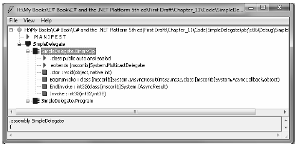

When you want to create a delegate type in C#, you use the delegate keyword. The name of your delegate type can be whatever you desire. However, you must define the delegate to match the signature of the method(s) it will point to. For example, assume you wish to build a delegate type named BinaryOp that can point to any method that returns an integer and takes two integers as input parameters:
// This delegate can point to any method, // taking two integers and returning an integer. public delegate int BinaryOp(int x, int y);
When the C# compiler processes delegate types, it automatically generates a sealed class deriving from System.MulticastDelegate. This class (in conjunction with its base class, System.Delegate) provides the necessary infrastructure for the delegate to hold onto a list of methods to be invoked at a later time. For example, if you examine the BinaryOp delegate using ildasm.exe, you would find the class shown in Figure 11-1.
As you can see, the compiler-generated BinaryOp class defines three public methods. Invoke() is perhaps the key method, as it is used to invoke each method maintained by the delegate object in a synchronous manner, meaning the caller must wait for the call to complete before continuing on its way. Strangely enough, the synchronous Invoke() method need not be called explicitly from your C# code. As you will see in just a bit, Invoke()is called behind the scenes when you make use of the appropriate C# syntax.
BeginInvoke() and EndInvoke() provide the ability to call the current method asynchronously on a separate thread of execution. If you have a background in multithreading, you know that one of the most common reasons developers create secondary threads of execution is to invoke methods that require time to complete. Although the .NET base class libraries supply an entire namespace devoted to multithreaded programming (System.Threading), delegates provide this functionality out of the box.
Figure 11-1. The C# delegate keyword represents a sealed class deriving from System.MulticastDelegate
Now, how exactly does the compiler know how to define the Invoke(), BeginInvoke(), and EndInvoke() methods? To understand the process, here is the crux of the compiler-generated BinaryOp class type (bold italic marks the items specified by the defined delegate type):
sealed class BinaryOp : System.MulticastDelegate { public int Invoke(int x, int y); public IAsyncResult BeginInvoke(int x, int y, AsyncCallback cb, object state); public int EndInvoke(IAsyncResult result); }
First, notice that the parameters and return type defined for the Invoke() method exactly match the definition of the BinaryOp delegate. The initial parameters to BeginInvoke() members (two integers in our case) are also based on the BinaryOp delegate; however, BeginInvoke() will always provide two final parameters (of type AsyncCallback and object) that are used to facilitate asynchronous method invocations. Finally, the return type of EndInvoke() is identical to the original delegate declaration and will always take as a sole parameter an object implementing the IAsyncResult interface.
Let’s see another example. Assume you have defined a delegate type that can point to any method returning a string and receiving three System.Boolean input parameters:
public delegate string MyDelegate(bool a, bool b, bool c);
This time, the compiler-generated class breaks down as follows:
sealed class MyDelegate : System.MulticastDelegate { public string Invoke(bool a, bool b, bool c); public IAsyncResult BeginInvoke(bool a, bool b, bool c, AsyncCallback cb, object state); public string EndInvoke(IAsyncResult result); }
Delegates can also "point to" methods that contain any number of out or ref parameters (as well as array parameters marked with the params keyword). For example, assume the following delegate type:
public delegate string MyOtherDelegate(out bool a, ref bool b, int c);
The signatures of the Invoke() and BeginInvoke() methods look as you would expect; however, check out the EndInvoke() method, which now includes the set of all out/ref arguments defined by the delegate type:
sealed class MyOtherDelegate : System.MulticastDelegate { public string Invoke(out bool a, ref bool b, int c); public IAsyncResult BeginInvoke(out bool a, ref bool b, int c, AsyncCallback cb, object state); public string EndInvoke(out bool a, ref bool b, IAsyncResult result); }
To summarize, a C# delegate type definition results in a sealed class with three compiler-generated methods whose parameter and return types are based on the delegate’s declaration. The following pseudo-code approximates the basic pattern:
// This is only pseudo-code! public sealed class DelegateName : System.MulticastDelegate { public delegateReturnValue Invoke(allDelegateInputRefAndOutParams); public IAsyncResult BeginInvoke(allDelegateInputRefAndOutParams, AsyncCallback cb, object state); public delegateReturnValue EndInvoke(allDelegateRefAndOutParams, IAsyncResult result); }